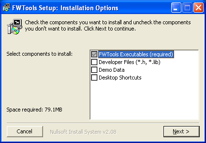
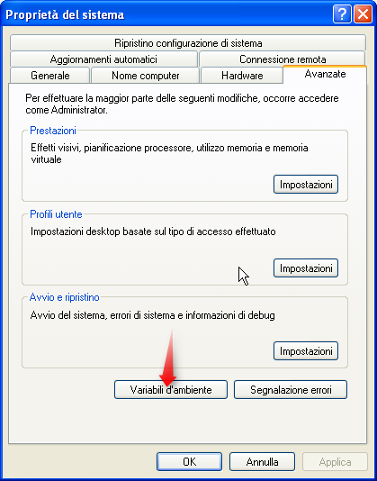
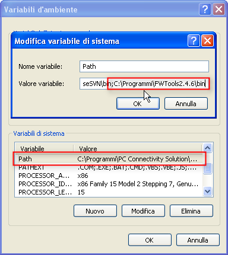
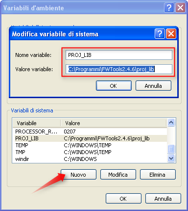

Introduzione
A Febbraio del 2006 – tantissimo tempo fa … – ho scritto un piccolo post sull’installazione di MapServer in ambiente Windows su un sistema in cui fosse già installato un webserver (Apache in particolare).
E’ stato un post che ha ricevuto molte letture, ma che ha anche subito qualche “legnata tecnologica”. Lo avevo scritto infatti non dentro il motore di questo blog (WordPress), ma dentro Writely.
Cosa è Writely? E’ nientepopodimeno che l’applicazione online su cui è basato l’editor di testo di Google Docs, comprata per l’appunto da Google proprio in quell’anno.
Ho scritto l’articolo, ho inserito anche delle immagini d’aiuto alla comprensione del testo, ed ho pubblicato tutto su questo blog con un click; il testo è stato contestualmente archiviato sui server di TANTO, mentre le immagini sono rimaste sui server di Writely. Questi non sono stati spenti subito e, per diverso tempo, questo vecchio glorioso articolo non ha subito alcuna conseguenza dal passaggio di Writely a Google. Spenti i server, sono sparite le immagini ed in qualche modo anche la leggibilità del post in oggetto. Ho provato a ripescarle dall’Internet Archive Wayback Machine, ma senza fortuna.
In ogni caso dovevo rimediare da tempo. Avevo rimosso dalla memoria il problema (sorry  ), e un commento recente mi ha messo nuovamente davanti alla cruda realtà (grazie riccardo). L’articolo inoltre è datato anche nei contenuti, e valeva la pena dargli una rinfrescata.
), e un commento recente mi ha messo nuovamente davanti alla cruda realtà (grazie riccardo). L’articolo inoltre è datato anche nei contenuti, e valeva la pena dargli una rinfrescata.
MapServer su Windows
Installare MapServer è cosa semplice in qualsiasi ambiente (forse il massimo è su Linux); può sembrare meno semplice farlo su server in produzione con diversi servizi già installati e configurati, specie se vogliamo usare degli installer grafici e magari chiudere gli occhi.
I file binari per Windows sono contenuti in questi tre pacchetti:
In questa guida sfrutteremo FWTools, di cui abbiamo parlato diverse volte.
Installazione passo passo di MapServer
Il prerequisito è quello di installare e scaricare FWTools per Windows dal sito ufficiale, e poi lanciarne l’installazione. Io di solito lo faccio scegliendo le opzioni visibili in figura.

I file vengono estratti di default nella cartella “C:\Programmi\FWToolsx.x.x“. L’eseguibile di MapServer – mapserv.exe – è uno dei file a corredo di FWTools e lo troverete nella cartella “C:\Programmi\FWToolsx.x..x\bin“.
Copiatelo nella cartella CGI di Apache (o in una qualsiasi cartella in cui il web server può lanciare applicazioni di questo tipo). Sul PC da cui scrivo la cartella è “C:\Programmi\Apache Software Foundation\Apachex.x\cgi-bin”
Copiare l’eseguibile non basta perché ci sono diverse dipendenze da rispettare. Per soddisfarle basterebbe copiare tutti i file contenuti in “C:\Programmi\FWToolsx.x..x\bin” nella cartella CGI, ma non è una procedura “pulita”. E’ più corretto impostare delle variabili d’ambiente.
La prima è il PATH, in cui inseriremo proprio la cartella “C:\Programmi\FWToolsx.x..x\bin“. Per farlo basta aprire le “Proprietà del sistema” di Windows e cliccare su “Variabili d’ambiente”.

Tra quelle già definite troverete proprio PATH. Modificatela inserendo nel campo “Valore variabile”, a fine riga, il percorso della cartella bin di FWTools: inserite prima un “;”.

C’è da impostare ancora una variabile d’ambiente in quanto MapServer deve “sapere” dove sono i file in cui sono definiti i sistemi di proiezione. La cartella in questo caso è “C:\Programmi\FWToolsx.x.x\proj_lib” e la variabile è PROJ_LIB.
Questa (di solito) non è – come PATH – già esistente e la dovrete creare cliccando sul tasto “Nuovo” ed inserire i valori come nella figura sottostante.

A questo punto riavviate il PC, aprite il browser e lanciate un URL di questo tipo: http://vostrosito/cgi-bin/mapserv.exe
Se avrete come risposta la stringa “No query information to decode. QUERY_STRING is set, but empty.“, vorrà dire che tutto è andato a buon fine.
Non vi resta che creare delle belle applicazioni di web-mapping.
I contenuti potrebbero non essere più adeguati ai tempi!

By riccardo on gen 11, 2010
Funziona tutto. La procedura è corretta. La mia cartella del web server Apache è questa:
C:\wamp\bin\apache\Apache2.2.11\cgi-bin
By riccardo on gen 12, 2010
Problemi con la configurazione dei path nei file html del tutorial:
MIA CONFIGURAZIONE:
(IL FILE EXE)
C:\wamp\bin\apache\Apache2.2.11\cgi-bin\mapserv.exe
(LOCALHOST: qui dentro c’è tutto il tutorial compreso index.html e itasca.map)
C:\wamp\www\mapserv_prova\
(SEGUE CODICE DI index.html)
MapServer Itasca Application
function configure() {
var template = document.demo.template.options[document.demo.template.selectedIndex].value;
// EDIT THE NEXT 2 LINES TO MATCH YOUR SETUP
var snippet = "IMAGEPATH '/wamp/www/mapserv_prova/docs_maps/tmp/'";
snippet += " IMAGEURL '/tmp/'";
snippet += " TEMPLATE " + template;
document.demo.map_web.value = snippet;
if(template.indexOf("frame") != -1) document.demo.action = "frames.html";
if(template.indexOf("dhtml") != -1) document.demo.action = "frames_dhtml.html";
}
MapServer Itasca Application (ms v5.0)
This demonstration application will take you through various levels of complexity. Starting with a basic application that
allows a user to pan/zoom and change layers we add:
dynamically configured scalebars
javascript-based panning
query results to a frame
and finally, a DHTML rubber-band zoom/query capabilty
The base data is the old-reliable Itasca dataset that we know and love...
Basic Application
-- Adds second scalebar
-- Adds pan controls
-- Adds frames
-- Adds dhtml rubber-band box
This site running MapServer v. 5.0
A parte la fatica per trovare il path giusto nell’action del form (quello sembra funzionare), stessa cosa per il path di itasca.map, ma ora la pagina mi segnala questo errore:loadWeb(): Unknown identifier. Parsing error near (IMAGEPATH):(line 1)
Ho provato path assoluti, relativi..ma nulla. Mi sai dire dove sta il problema?
By Andrea Borruso on gen 13, 2010
Ciao Riccardo,
sono contento di esserti stato utile per l’installazione di MapServer.
Il tutorial di cui parli, è quello scaricabile dal sito di MS4W (MapServer Itasca Demo Application)?
Per il problema di cui parli, gli spazi adeguati dove scrivere sono la mailing list degli user di MS4W[1] e quella degli user di MapServer[2].
Troverai grande competenza e disponibilità.
Questo non è un customer service, ne un forum, ne appunto una mailing list.
Proverò comunque a dare un’occhiata al tuo problema in settimana (sempre che il tutorial sia quello che ti ho scritto sopra).
Ciao,
a
[1] http://bit.ly/4zoATk
[2] http://bit.ly/8GTkBX
By gimmyx on giu 15, 2010
salve a tutti, complimenti per questo breve tutorial, per me importantissimo, alla fine di tutti i passaggi,
a me dava questo errore:
Impossibile trovare il punto d’ingresso free_defaults della procedura nella libreria di collegamento dinamico LIBMYSQL.dll, che ho risolto copiando la libreria dentro c:\windows\system32
Lo scrivo nel caso possa servire a qualcuno.
By Maria Pia on mar 30, 2011
ciao a tutti, sto provando ad utilizzare Mapserver e Fusion per visualizzare mappe e raster ecw. Da quanto ho capito sia OSGeo4W che MS4W non supportano i raster ecw mentre, seguendo la procedura illustrata in questo articolo sono riuscita a visualizzare il mio raster direttamente nel browser. Quindi l’installazione di FWTools e di Mapserver è corretta e funziona! A questo punto ho installato Fusion seguendo le indicazioni del sito ufficiale http://trac.osgeo.org/fusion/wiki/MapServerTutorial, ma evidentemente manca ancora qualcosa perchè non riesco a far visualizzare nessuna mappa. Mi chiedo se nell’installazione di FWTOOLS manca ancora qualche libreria o qualche parametro di configurazione da impostare per poter utilizzare Fusion. Qualcuno sa darmi delle indicazioni?
By Andrea Borruso on mar 31, 2011
Ciao Maria Pia,
mi fa piacere che questo vecchio post ti sia tornato utile per risolvere un “pezzetto” del tup problema.
Purtroppo però nessuno di noi ha esperienza con Fusion.
Da quello che capisco, se MapServer è installato e funziona (e mi sembra il tuo caso), la tua attenzione si deve concentrare su Fusion.
Verificare ad esempio che tutti i valori di variabili che fanno riferimento ad un percorso, siano congruenti con il tuo ambiente di lavoro.
A costo di sembrarti banale, ti consiglio di scrivere sulla mailing list “user” di fusion, di scrivergli i dettagli del tuo ambiente di lavoro, e descriveregli il tuo errore.
ciao,
a
By Maria Pia on apr 1, 2011
Ciao Andrea, grazie per la tua risposta! In realtà ho scoperto che mentre FWTOOLS include Python MapScript, Fusion richiede PHP MapScript. Mi sai dire se esiste un modo per aggiungere PHP MapScript a FWTOOLS? ciao.
By Antonio Falciano on apr 1, 2011
Piuttosto che FWTools userei direttamente MS4W (MapServer for Windows), dato che contiene già i binari di PHP Mapscript ed è semplicissimo da installare. Inoltre, esiste anche un package specifico per Fusion che potrebbe fare al caso tuo. Ciao
By Maria Pia on apr 1, 2011
Ma con MS4W non posso utilizzare i raster ecw!
By Antonio Falciano on apr 1, 2011
Vero, il supporto di ECW in MS4W è stato disabilitato nelle beta della v.3 per problemi legati alle licenze… Tuttavia, disponendo della licenza server di ECW, anche con un vecchio MS4W puoi fare quello che devi… Hope this helps!
By Antonio M. on ott 4, 2011
Salve Andrea,
il mio problema è il seguente. In realtà l’installazione in locale è andata per il meglio, adesso è ora del grande balzo,ovvero andare in rete. Qualche consiglio su che tipo di server utilizzare affidandosi ad un provider? O dici che è meglio mettere su un server proprio e configurare quello li? Che ci dici dall’alto della tua esperienza?
Grazie a presto
By Andrea Borruso on ott 5, 2011
Salve Antonio,
non ho esperienza su provider che forniscono MapSever preinstallato, o che ti lascino la libertà di farlo. Ad oggi, per questo tipo di servizi ho sempre usato dei server “miei” e mi sono mosso in autonomia.
Ti consiglio di girare la richiesta di hosting sulla lista degli utenti di MapServer – http://bit.ly/ncP7Nu – dove troverai sicuramente le risposte che cerchi.
Ti ringrazio dal basso
By Antonio M. on ott 18, 2011
Ho fatto il grande passo, sono andato su Aruba VPS da 13 euro al mese, fiducioso di alcune discussioni su free-gis italia. In realtà credo di essere a buon punto, ho configurato Apache col pacchetto MS4W e adesso ho provato a configurare mapserv.exe con FWTools come spiegato sopra. Ma quando vado a chiamare mapserv da http://mioip/cgi-bin/mapserv.exe mi risponde con un bell’Internal Server Error…
Aiutooooooooo!!!!
E devo ancora vedere come farci partire sopra il pmapper
By Andrea Borruso on ott 19, 2011
Ciao Antonio,
visto che stai usando MS4W, usa il MapServer che trovi lì dentro già pronto, “cotto” e (quasi) mangiato.
Non dovresti avere alcun tipo di errore, e non c’è nulla da installare.
Fammi sapere,
a
By Pompeo on gen 12, 2012
Salve,
mi dispiace disturbarla ma avrei bisogno di una dritta per l’installazione di mapserver sul mio pc:
caratteristiche sistema operativo: Windows 7, 64 bit webmaster: wampserver (mi dà icona verde);
ho seguito la proceduta da lei indicata per l’utilizzo di FWtools2.4.7, copiato mapserver.exe in apache,
modificato Path (%SystemRoot%\system32;%SystemRoot%;%SystemRoot%\System32\Wbem;%SYSTEMROOT%\System32\WindowsPowerShell\v1.0\;C:\Programs Files (x86)\FWTools2.4.7\bin)
e creato proj_lib.
Quando faccio il test lanciando la URL da lei suggerita ottengo:
Not Found
The requested URL /cgi-bin/mapserv.exe was not found on this server.
http://www.vostrosito.com
Tuttavia se lancio mapserver dal promt le cose mi sembra siano in linea con quanto riportato sui tutorial di mapserver.
La ringrazio anticipatamente
By Andrea Borruso on gen 12, 2012
Salve Pompeo,
ho scritto http://vostrosito/cgi-bin/mapserv.exe come esempio di URL generico.
Se stai lavorando sul tuo PC prova a scrivere http://localhost/cgi-bin/mapserv.exe e facci sapere.
Grazie a te,
a
By Pompeo on gen 12, 2012
E’ tutto ok!!
Grazie ancora per la pazienza con cui sopporti domandi sciocche.
In verità avevo inserito localhost, ma inserendo il percorso completo di cgi-bin ed avendo come risultato l’apertura di una pagina di google.
By Monica on mar 13, 2013
A me invece, nonostante io abbia seguito la procedura per installare mapserver con WAMP già installato..compare questo
By Andrea Borruso on mar 13, 2013
Ciao Monica,
che errore leggi nel log?
Che sistema WAMP hai?
Saluti
By Monica on mar 13, 2013
Ho wampserver versione 2.2
…ehm…dove lo trovo il log? prima di venerdì però non ritorno sul PC di lavoro, non posso inserire maggiori dettagli
By Andrea Borruso on mar 14, 2013
Ciao Monica,
nella cartella di installazione di wampserver ci dovrebbe essere una cartella denominata “log”.
Lì trovi diversi file di log, tra cui quello con gli errori di apache. Apri di nuovo la tua pagina di test che ti da l’errore, poi apri il file di log con gli errori e guarda le ultime righe in fondo al file. Cosa leggi?
Scrivi qui anche l’URL della pagina che ti genera l’errore?
Grazie